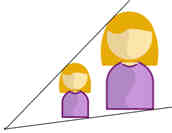

Resizing

When you resize a shape it gets bigger or smaller ...
... but it still looks similar:
- all angles stay the same
- relative sizes are the same (for example
the face and body are still in proportion)
Here we call it resizing, but other people call it dilation, contraction, compression, enlargement or even expansion! Same idea, just different names.
|
To resize, just do this for every corner:
Then just connect the dots for the resized shape! |
 |
Try It Yourself
Press "Play" button.
- If you want the shape to double in size use 2,
- If you want to halve in size use 0.5
images/resize.js
Try placing the pin in different locations, too.
5150, 5151, 845, 846, 2131, 2132, 3352, 3353, 3354, 3355